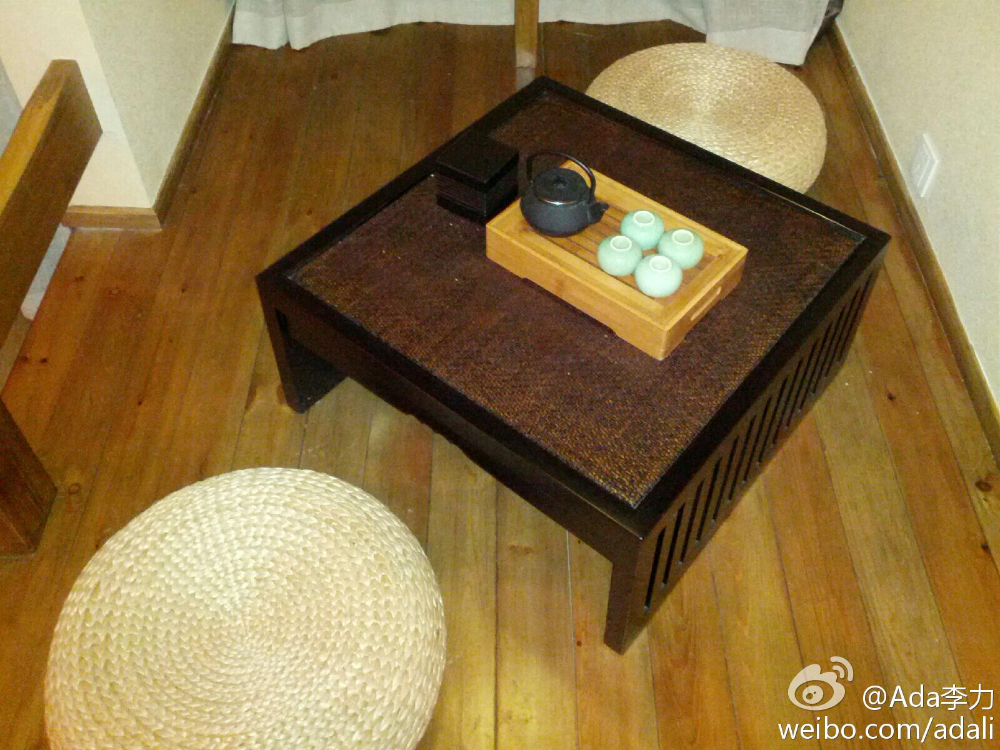

#openstack中国行#成都站活动后，晚上的聚餐也是重头戏。一起吃饭的有好几拨人，讲师们，活动志愿者们，带几个研究生来学习的西电教授，来了解互联网的华为人，还有专程从武汉赶过来的活动协办者。社区活动一定要吃饭。
成都的技术活动也很密集，仅这个周末，在软件园就有四场活动，移动开发者大会，OpenStack中国行，OpenParty, 和腾讯开放沙龙。但组织者说，规模小，而且相互联系不多，CSDN可以在其中做些事情了。
布衣客栈房间里的茶具和蒲团，晚上与@Adela可爱多 一起品了参加#OpenStack中国行#活动杨总自带的贡茶。已经遇到过几例旅行中自带茶叶的，俺要向别人学习学习找乐趣的方式。 我在#天府软件园D区# 成都·天府软件园D区 
 成都·天府软件园D区
成都·天府软件园D区